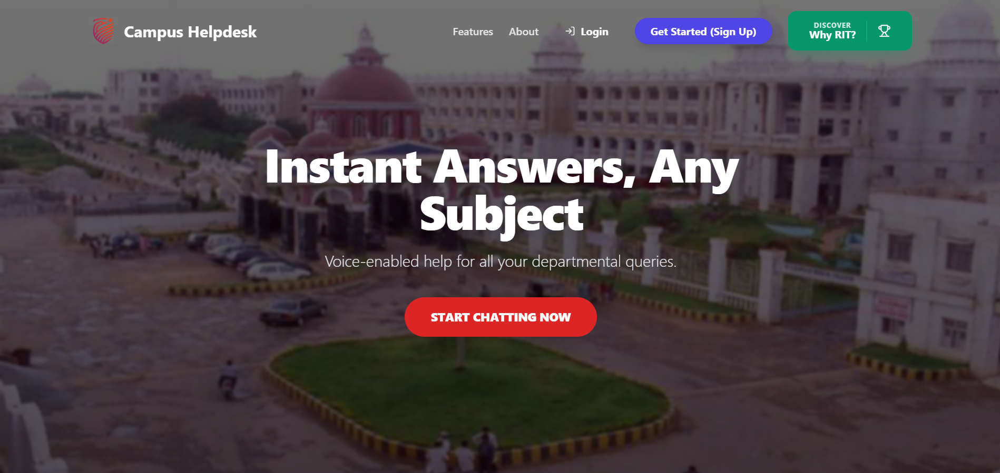

Campus Helpdesk - AI Powered Chatbot


- Built an AI-powered query resolution system using vector search (Pinecone + hybrid BM25 re-ranking), reducing manual query handling by ~40% and improving response accuracy.
- Designed a distributed backend architecture using PM2 clustering (currently10 instances or customizable instances) to enable horizontal scaling and load balancing across CPU cores, supporting ~50-80 concurrent users with stable latency.
- Optimized database performance using MongoDB connection pooling and multi-database architecture, ensuring efficient handling of concurrent requests and reducing connection overhead under load.
- Built an asynchronous email queue system with batch processing (20 jobs/cycle) and retry logic, decoupling email workflows from request handling to improve system responsiveness under concurrency.
- Implemented rate limiting (up to 100 req/15 min per user) and API-level throttling to prevent overload and ensure fair usage during peak traffic.